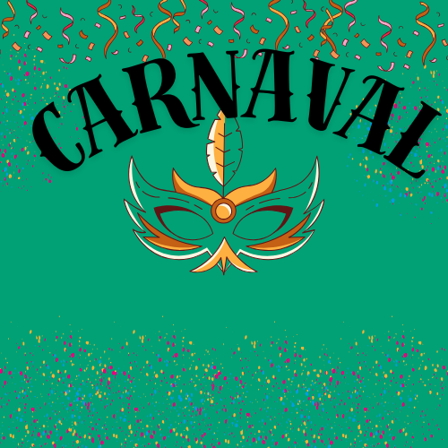
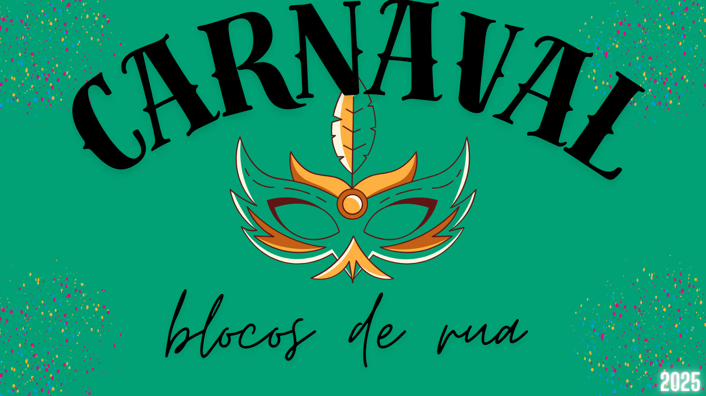
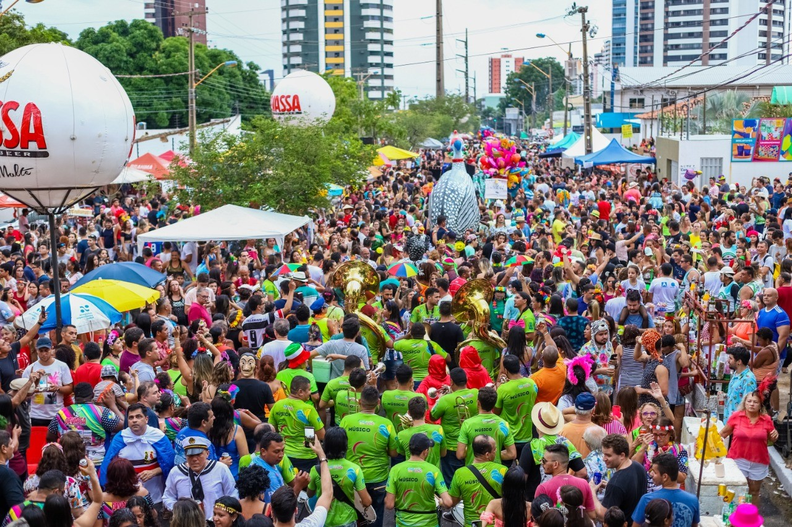

blocos de rua
Blocos de rua são grupos de pessoas que se organizam para fazer festas ao ar livre, geralmente durante o carnaval, nas ruas de diversas cidades, especialmente no Brasil. Essas festas costumam ter uma atmosfera descontraída e animada, onde os foliões se fantasiam e dançam ao som de marchinhas, samba, axé, entre outros ritmos.
Cada bloco de rua tem suas características, e eles podem ser temáticos, como os de samba, rock, funk ou até mesmo blocos que misturam várias influências. Eles são uma forma popular de celebrar o carnaval, permitindo que qualquer pessoa participe, sem a necessidade de ingressos ou trajes formais. Em algumas cidades, como o Rio de Janeiro e Salvador, os blocos de rua atraem milhões de pessoas e se tornaram uma das principais atrações da festa. Além disso, há blocos que possuem grandes bandas e trios elétricos, enquanto outros têm um formato mais simples, com grupos de amigos ou de moradores locais. 